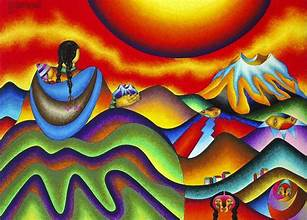
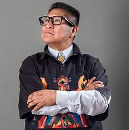
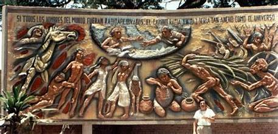
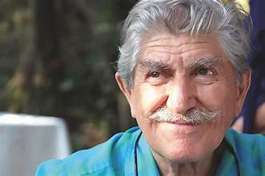
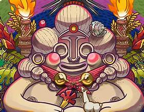
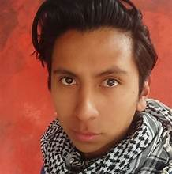

Técnica: Pintura al óleo y acrílico. Uso explosivo de colores brillantes e iconografía andina (soles, cóndores, cholitas).
Nacido en Cochabamba pero de raíces profundamente aimaras, es uno de los artistas contemporáneos más reconocidos de Bolivia. Autodidacta en gran medida, ha llevado sus soles, lunas, cholitas y cóndores a exposiciones en todo el mundo. Su arte no solo decora lienzos, sino también los gigantescos edificios "cholets" en la ciudad de El Alto.
Facebook: Roberto Mamani Mamani
Instagram: @mamanimamani_art


Técnica: Muralismo y cerámica monumental. Sus obras están en espacios públicos relatando la historia y el alma del oriente boliviano.
Nacido en Santa Cruz de la Sierra, es considerado uno de los más grandes muralistas de América Latina. Su técnica se basa en el relieve en cerámica vidriada, creando monumentos públicos que cuentan la historia, las luchas sociales y el folklore de las tierras bajas de Bolivia. Su obra es un patrimonio vivo en las plazas cruceñas.
Facebook: Lorgio Vaca (Página Oficial / Fundación)


Técnica: Ilustración digital y concept art. Mezcla elementos de la cultura pop y el folklore boliviano (como los trajes de la Entrada del Gran Poder) con estética cyber-punk o de ciencia ficción.
Ilustrador y artista conceptual paceño. Se ha hecho muy popular en el entorno digital por reinterpretar la cultura boliviana (como los trajes de la Diablada o la Morenada) bajo una estética cyber-punk y futurista. Sus personajes combinan luces de neón, armaduras robóticas y textiles tradicionales, creando una identidad visual única para las nuevas generaciones.
Instagram: @salvador_pomar_art
ArtStation: Salvador Pomar